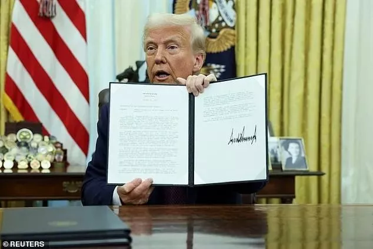
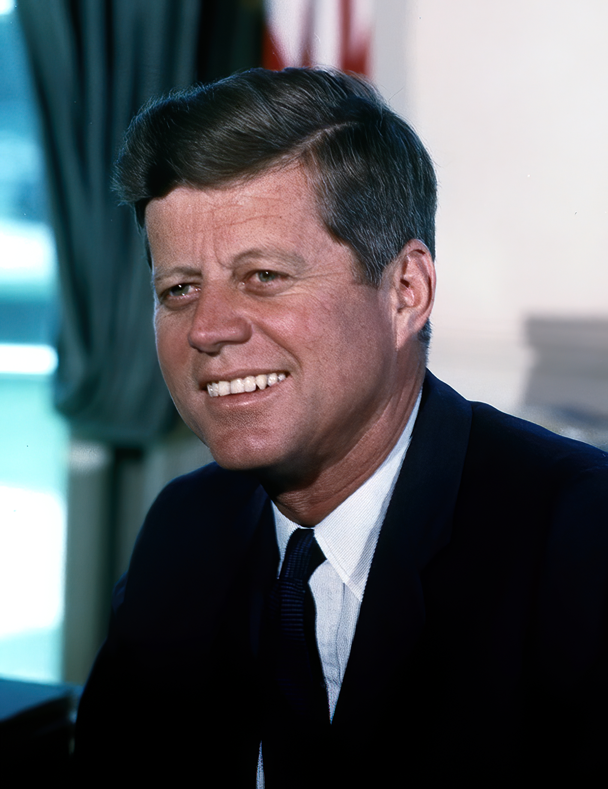

国际快讯
2025 年 1 月 23 日
特朗普总统下令解密肯尼迪总统遇刺案所有文件
本文信息来源于 网络
特朗普总统周四（1月23日）签署行政命令，指示解密所有与1963年约翰·F·肯尼迪（John F. Kennedy）总统遇刺事件相关的剩余文件，这既是履行他的竞选承诺，也是给所有的美国人一个交代，这起举世震惊的刺杀案，在发生60年后真相终于要公开了。
特朗普在命令中强调：“总统约翰·F·肯尼迪（President John F. Kennedy）、参议员罗伯特·F·肯尼迪（Senator Robert F. Kennedy）和牧师马丁·路德·金二世（Martin Luther King, Jr.）遇刺50多年后，联邦政府仍未向公众公布与这些事件相关的所有记录，他们的家人和美国人民应该得到透明和真实的信息，最终毫不拖延地公布与这些暗杀事件有关的所有记录符合国家利益。”
根据这项行政命令，国家情报总监需在15天内制定计划，全面解密有关肯尼迪遇刺事件的文件。同时，情报部门还需在45天内制定计划公布与罗伯特·肯尼迪和马丁·路德·金遇刺相关的档案。
凶杀案发生60年后，各类阴谋论仍在流传。尽管数百万页的肯尼迪总统文件已陆续公布，但仍有几千页机密文件被保存在国家档案馆中。最新解密的文件包括中央情报局的电报和备忘录，详细记录了李·哈维·奥斯瓦尔德（Lee Harvey Oswald）在暗杀发生前几周访问墨西哥城，与古巴驻墨西哥大使馆，以及苏联驻墨西哥大使馆工作人员会面的情况。

图片是肯尼迪总统被暗杀的前几分钟，肯尼迪总统与总统夫人杰基·肯尼迪，以及得克萨斯州州长约翰·康纳利坐在总统车内。
肯尼迪总统遭遇暗杀后，官方的调查报告称奥斯瓦尔德是“独狼”，没有其他势力参与，但美国人不信。几十年来，阴谋论者一直质疑官方叙述，一些人推测，他可能与苏联、古巴，甚至美国的中央情报局（CIA）合作，尤其是夜总会老板杰克·鲁比（Jack Ruby ）在电视直播中枪杀奥斯瓦尔德（灭口）的行为，更是加剧了公众对案件真相的怀疑。
John_F._Kennedy肖像，拍摄于1963年，椭圆形办公室
事实上，在他的第一任期内，特朗普也曾承诺公布这些记录，但在中央情报局和联邦调查局的强烈反对下，他最终同意部分保留部分文件，理由是部分内容可能威胁国家安全。
近日，特朗普在接受福克斯新闻的采访时透露了他的计划，并表示此次文件解密将彻底清除围绕这起案件的神秘面纱。他在采访中说道：“我将立即释放这些文件。我们会查看这些信息，现在正是时候。”
特朗普还提到，前CIA局长迈克·蓬佩奥（Mike Pompeo）曾在其第一任期内说服他暂缓解密行动，称当时的政治和安全环境不适合公开这些文件。
此次文件解密可能对历史学家、研究人员以及公众产生深远影响。尽管许多人怀疑这些档案是否包含能够改变案件叙述的决定性信息，但它们为进一步研究提供了可能性，并让公众得以接触到更多真实的历史细节。